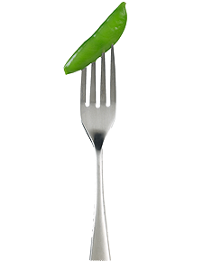

What foods are in the Vegetable Group?
Any vegetable or 100% vegetable juice counts as a member of the Vegetable Group. Vegetables may be raw or cooked; fresh, frozen, canned, or dried/dehydrated; and may be whole, cut-up, or mashed.
Based on their nutrient content, vegetables are organized into 5 subgroups: dark-green vegetables, starchy vegetables, red and orange vegetables, beans and peas, and other vegetables.
How many vegetables are needed?
The amount of vegetables you need to eat depends on your age, sex, and level of physical activity. The amount each person needs can vary between 1 and 3 cups each day. Those who are very physically active may need more. Recommended total daily amounts and recommended weekly amounts from each vegetable subgroup are shown in the two tables below.
Note: Click on the top row to expand the table. If you are on a mobile device, you may need to turn your phone to see the full table.
*These amounts are appropriate for individuals who get less than 30 minutes per day of moderate physical activity, beyond normal daily activities. Those who are more physically active may be able to consume more while staying within calorie needs.
Vegetable subgroup recommendations are given as amounts to eat WEEKLY. It is not necessary to eat vegetables from each subgroup daily. However, over a week, try to consume the amounts listed from each subgroup as a way to reach your daily intake recommendation.
Note: Click on the top row to expand the table. If you are on a mobile device, you may need to turn your phone to see the full table.
What counts as a cup of vegetables?
In general, 1 cup of raw or cooked vegetables or vegetable juice, or 2 cups of raw leafy greens can be considered as 1 cup from the Vegetable Group. The table below lists specific amounts that count as 1 cup of vegetables (in some cases equivalents for ½ cup are also shown) towards your recommended intake.
Note: Click on the top row to expand the table. If you are on a mobile device, you may need to turn your phone to see the full table.